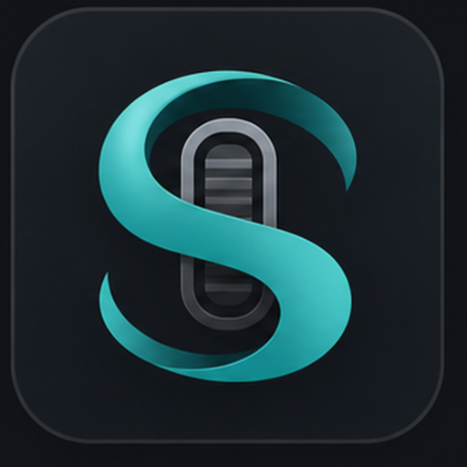
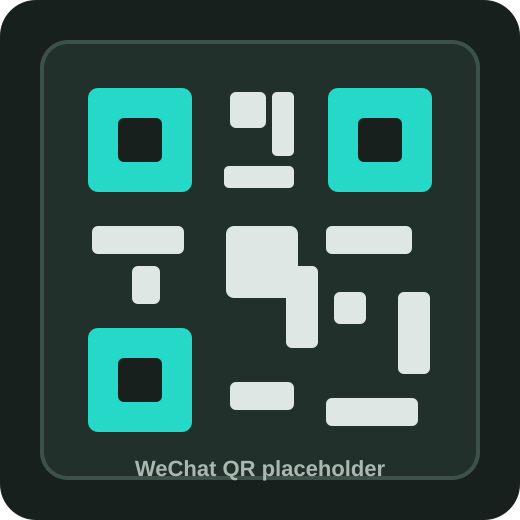

Pulse-based glide
Wheel notches are converted into smaller motion steps with a natural long-tail easing feel.

SilkWheelWindows smooth scrolling utility
SilkWheel turns stepped wheel input into a controlled glide, with tuned profiles, instant tray control, per-app exclusions, and themes that stay out of your way.
Switch profiles instantly and tune the glide.
Keep native wheel behavior where you need it.
Designed for daily use
Wheel notches are converted into smaller motion steps with a natural long-tail easing feel.
Switch between quick, medium, native, and custom profiles until the scroll feel lands right.
Pick apps from the Windows file picker and let them keep their original wheel behavior.
SilkWheel stays in the tray, opens quickly, and applies every setting immediately.
Choose light, gray, dark, or save your own hue, saturation, and brightness presets.
No cloud account is required for scrolling. Licensing can be activated separately.
Free beta
SilkWheel is currently free during beta. After 21 days, share one short feedback note to keep using the current beta version.
Try the complete smooth scrolling experience first. When the beta period ends, submit real feedback to continue using this beta.
If SilkWheel proves useful, a more advanced Pro version may add deeper tuning, app-specific profiles, and refined algorithms.
Beta access is feedback-gated, not payment-gated. Future paid plans will only be introduced after the product-market signal is clearer.
Support development
If SilkWheel makes your daily scrolling feel better, you can optionally support development. This is separate from beta access and never required.
Use PayPal or a creator-support link when it is connected. A small tip helps cover testing, signing, hosting, and future polish.
Donate with PayPalPayPal link is not connected yet.
Scan the WeChat appreciation code after it is added. You can also leave feedback first; that is already valuable.

To activate this section, replace the PayPal link and upload your real WeChat appreciation QR image.
Questions
No. It listens for mouse wheel events, smooths them, and sends controlled wheel input back to Windows.
Yes. Switch to the native profile to bypass SilkWheel smoothing and compare the feel instantly.
Excluded apps receive the original wheel event, so SilkWheel will not smooth scrolling inside them.
For a small international Windows utility, Paddle or Lemon Squeezy is usually easier because they can handle tax/VAT as a merchant of record. Stripe is best if your business setup can handle taxes and compliance yourself.
Feedback
Tell us what feels right, what still stutters, or which app needs better support. Short notes are welcome.